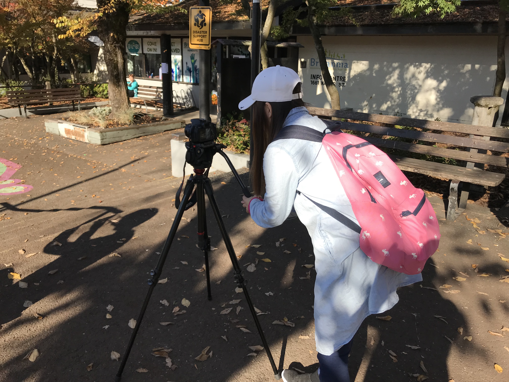

Bio
I am Angelica Lin, former Art Major pursuing a Bachelor’s of Arts in the School of Interactive Arts and Technology at Simon Fraser University. I have a great passion for animation and video editing. I aim to become an animator or a film producer. I was inspired by the Japanese animated movie called “Spirited Away ” by Hayao Miyazaki when I was young. The movie has a certain magic to it that makes it extremely heartfelt and genuine. I aim to create that same magic in my own works. I enjoy building and animating interaction models as well as the planning and coordinate various aspects of film production. The techniques for 3D computer animation such as keyframing, performance animation, procedural methods and motion capture and as well as the lighting and soundtrack generation related to video editing. I strive to utilize my knowledge in these two design fields to create a logical and smooth design in my work.